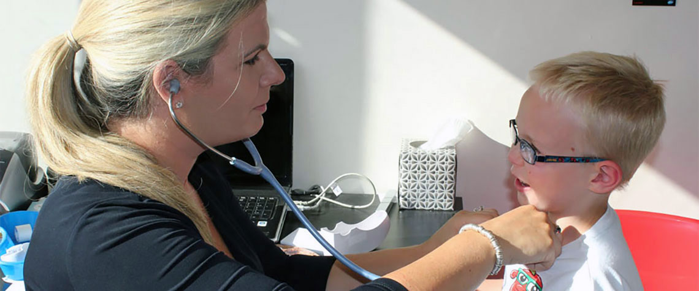

Children & families
- General practice consultations
- Childhood vaccinations
- Personal care for every generation
Every person is different. Their care should be too. Personal, thoughtful healthcare for you and your family, all in one familiar place.


Your needs change through life. Our care grows with you, with a familiar team here for the whole journey.


Personal primary care for all ages, with your family's wellbeing at the heart of every visit.
Convenient phlebotomy clinics with our practice nurse, in a calm and reassuring setting.
Vaccination clinics to help protect you and your family. Call us to discuss your needs.
Clear, competitive pricing, with discounts for family, two-child and review visits.
Combined antenatal care, contraceptive care, cervical screening and menopause consultations.
Our practice is part of the Luke Doc Out of Hours service for care beyond regular hours.
We are a fully private GP clinic in Rathfarnham / Templeogue.
Our aim is to see patients same day (or next day during busier times). We believe it is important to be seen promptly – no one can plan for when they get sick.
We have a range of services in addition to general medical practice that we hope will meet the needs of our local community. Both immediate medical issues are dealt with, and also issues that impact on future health.
Advice and support regarding management of excess body fat. Appropriate prescribing where indicated. Up-to-date use of new treatments and tailored advice. All our doctors here are experienced in prescribing weight loss injections.
This is a two-visit process over a week with full blood test screening, tailored to your age and needs, an ECG, and urine. Then, an extended GP appointment for full physical examination, discussion of lifestyle, wellness and blood results.
Dr Maurice O’Farrell has a special interest in Dermatology. He is a goldmine of information on the identification and treatment of many different skin conditions. He is experienced with medical management of acne, including prescribing of Roaccutane.
The injection of joints can be offered to patients with joint injuries or arthritis issues. This can give great pain relief and symptom relief. This can avoid the need for long waits for hospital treatment.
We have three female doctors here with an interest in women’s health and menopause.
Tailored menopause advice and a discussion of your symptoms can make this part of life more navigable for women.
Antenatal care is part of the combined hospital care scheme which is free and a lovely part of our day.
Cervical screening is free from age 25-60 years.
Contraceptive care is also free.
Run by the most capable and caring Nurse Caroline and Nurse Kay. It runs each day 9am to 12 noon.
Our front desk can help you organise paperwork and book appointments, and is run by Audrey, Antonia and Suzie.
4 Ballyroan Road is opposite The Blue Haven Pub. It is wheelchair accessible, and also has a large waiting room, baby changing facilities and its own carpark.
We love what we do and will continue to always do our best to look after your medical needs!
Dr Eleanor Galvin and Team
familydoctors.ie
4 Ballyroan Road, Templeogue
Dublin 16
01-494 63 69
Meet our doctors, nurses and practice team.
Meet the whole team
Email is the quickest way to request an appointment. You can also call our team during office hours.
Email for an appointment